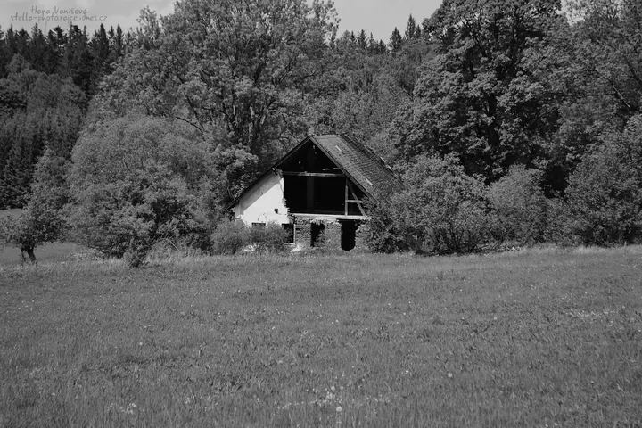
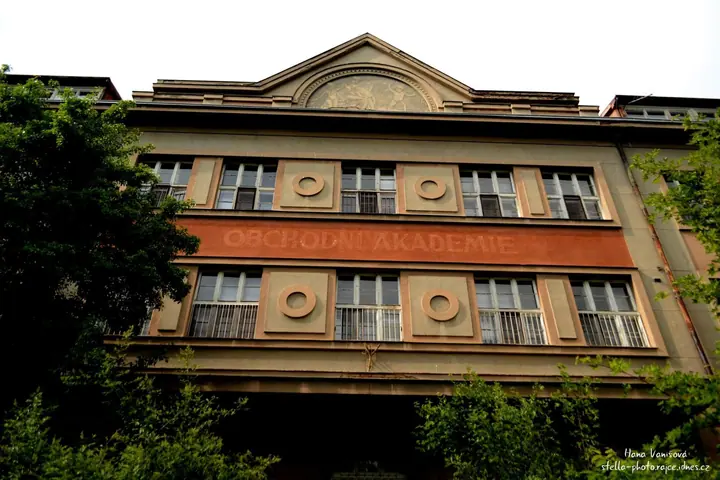

Portréty zvířat
Nejčastěji fotím zvířata: kočky, potkany, koně a další mazlíčky. Ráda pracuji s černobílou fotografií a tmavým pozadím, aby vynikla povaha zvířete.

Fotografka zvířat a portrétů
Jmenuji se Hana Vanišová a fotím pod značkou Stella photo. Nejraději mám před objektivem zvířata, od koťat přes potkany až po koně. Fotím hlavně v Plzeňském kraji a v Praze.
Zeptat se na termín
Nejčastěji fotím zvířata: kočky, potkany, koně a další mazlíčky. Ráda pracuji s černobílou fotografií a tmavým pozadím, aby vynikla povaha zvířete.
Fotím i lidi, děti a rodinné chvíle doma. Bez strojeného aranžování, v prostředí, kde se cítíte přirozeně.
Fotografie mě provází dlouho a na Rajčeti mám v albech přes dva a půl tisíce snímků. Nejvíc mě baví zvířata, protože každé má svou povahu a stačí počkat, až ji samo ukáže.
Ráda pracuji s černobílou fotografií, tmavým pozadím a kontrastem. Kromě zvířat fotím i lidi a místa, často staré opuštěné domy, chalupy a zámky, které mají svou atmosféru.
Na fotkách je moje logo, které jsem si navrhla sama. Když mám dost času, ráda navrhnu logo i vám.
Pošlete mi e-mail, koho nebo co chcete vyfotit a kde. Nejraději fotím v Plzeňském kraji a v Praze.
Společně vybereme místo a čas, aby se vaše zvíře i vy cítili v klidu.
Fotím v tempu, které zvíře zvládne. Necháme mu prostor a počkáme na správný pohled.
Vyberu nejlepší snímky a upravím je v barvě nebo černobíle, podle toho, co fotce sluší.
Nejraději v Plzeňském kraji a v Praze. Jiné místo se dá domluvit individuálně.
Zvířata jsou mi nejbližší, ale fotím i portréty, děti a zajímavá místa.
Na všechny moje fotografie se vztahuje autorský zákon. Bez mého souhlasu je prosím nepoužívejte ani nekopírujte. Stačí se zeptat a domluvíme se.
Ano, když mám dost času, dělám loga i na zakázku. Často zdarma, záleží na náročnosti, času a přístupu.